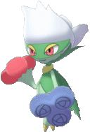

Tipo: Planta,Veneno
Debilidad: Fuego
 
Roserade es un Pokémon de tipo Planta/Veneno que evoluciona de Roselia cuando se le da una Piedra Día. Es la forma evolucionada final de Budew. Roserade tiene una apariencia elegante, con un cuerpo esbelto y delicado, adornado con hojas y flores. Es conocido por su gracia y su capacidad para lanzar polen tóxico desde las puntas de sus brazos. En la serie de juegos de Pokémon, Roserade es apreciado tanto por su elegancia como por su poder en combate.